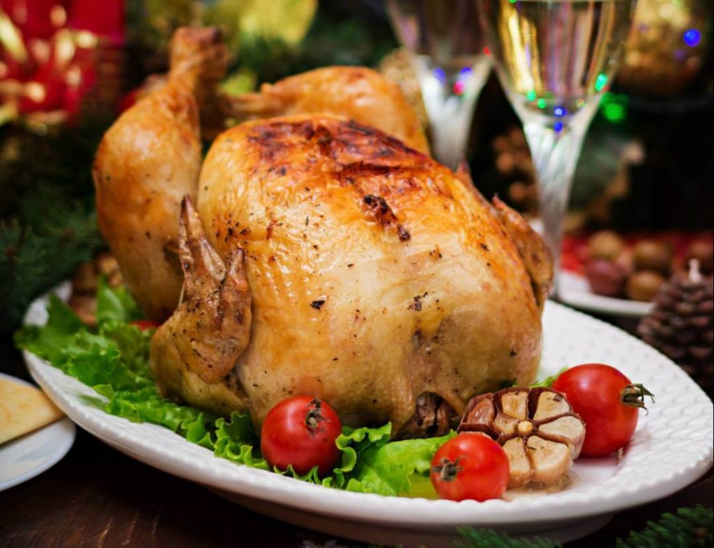
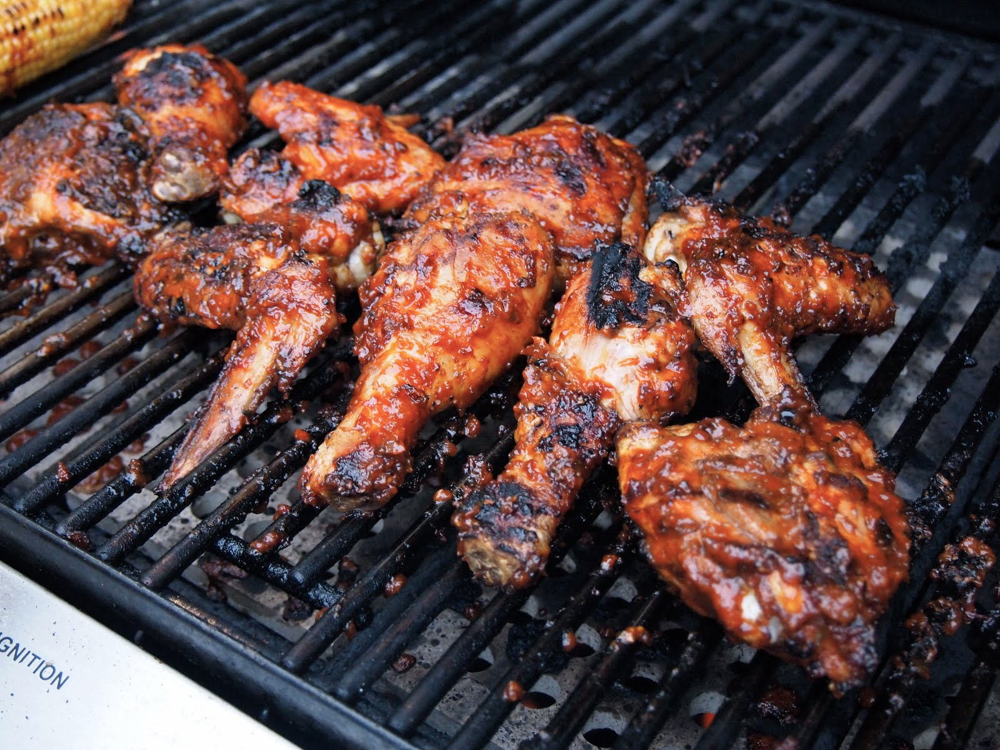
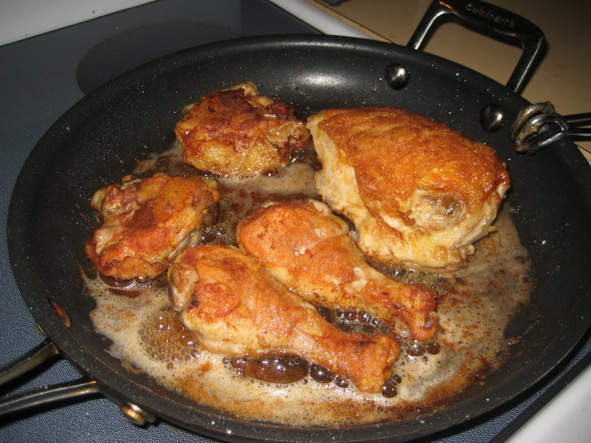
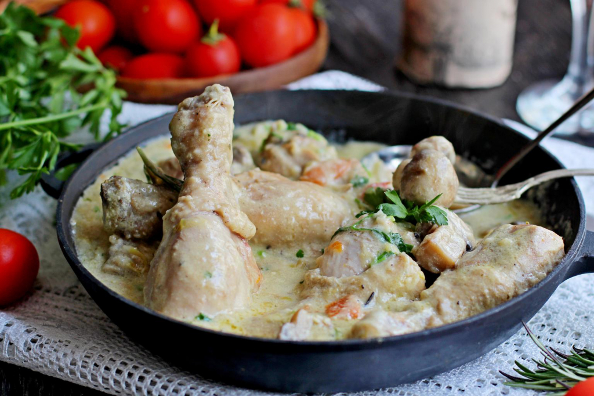
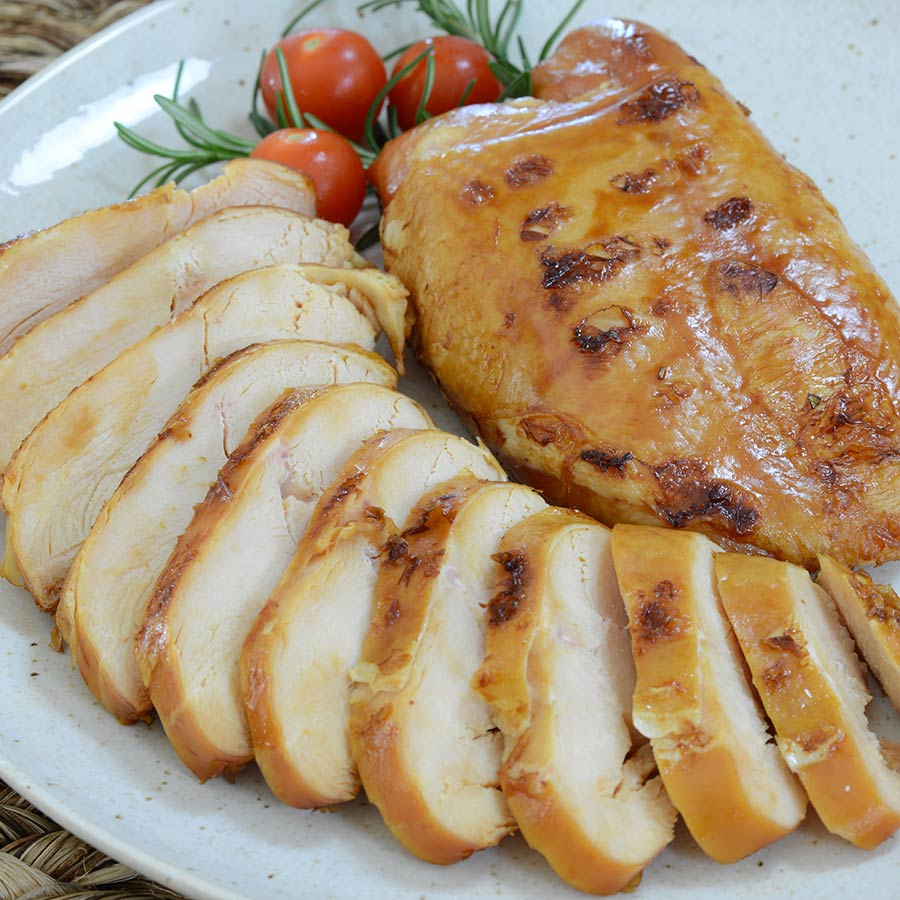

1. Курка в духовці
Цей рецепт допоможе вам приготувати смачну та соковиту курку в духовці.
Інгредієнти:
- 1 ціла курка
- 2 ст. л. оливкової олії
- 1 ч. л. солі
- 1/2 ч. л. чорного перцю
- 1 ч. л. сушених трав (наприклад, тим'яну або розмарин)
Інструкції:
- Розігрійте духовку до 180°C.
- Ретельно промийте курку під проточною водою та обсушіть паперовим рушником.
- Натріть курку оливковою олією, сіллю, перцем та травами.
- Покладіть курку в форму для запікання та випікайте 1-1.5 години.
- Перевірте готовність, проколовши найтовстішу частину стегна. Якщо сік прозорий, курка готова.
- Дайте курці відпочити 10 хвилин перед подачею.
2. Курка-гриль
Насолоджуйтесь смачною та хрусткою куркою-гриль з цим простим рецептом.
Інгредієнти:
- 1 ціла курка, розрізана на частини
- 2 ст. л. оливкової олії
- 1 ч. л. часникового порошку
- Сіль та перець за смаком
- Лимонні дольки для подачі
Інструкції:
- Підготуйте гриль до середньої температури.
- Натріть курячі частини оливковою олією, паприкою, часниковим порошком, сіллю та перцем.
- Розмістіть курку на грилі та готуйте, періодично перевертаючи, до золотистої скоринки та готовності в середині, близько 30-40 хвилин.
- Перед подачею дайте курці відпочити протягом декількох хвилин.
- Подавайте з лимонними дольками.
3. Курка-Смажена на Сковороді
Швидкий та смачний рецепт смаженої курки на сковороді, ідеально підходить для повсякденних страв.
Інгредієнти:
- 4 курячі стегенця або грудки без кістки та шкіри
- 1 ч. л. солі
- 1/2 ч. л. меленого чорного перцю
- 2 ст. л. рослинної олії
- 1 ч. л. подрібненого часнику
- Опціонально: свіжі трави, лимонний сік для подачі
Інструкції:
- Посипте куряче м'ясо сіллю і перцем з обох боків.
- Розігрійте сковороду з рослинною олією на середньому вогні.
- Покладіть курку на сковороду та смажте до золотистої скоринки та готовності в середині, близько 7-10 хвилин з кожного боку.
- За кілька хвилин до готовності додайте подрібнений часник для аромату.
- Перед подачею дайте курці відпочити протягом декількох хвилин. Опціонально додайте свіжі трави або лимонний сік.
4. Курка у Кисло-Солодкому Соусі
Надзвичайно ароматне блюдо, яке поєднує в собі солодкі та кислі нотки, ідеально підходить для сімейної вечері.
Інгредієнти:
- 500 г курячих грудок, нарізаних на шматочки
- 1 ст. л. соєвого соусу
- 1 яйце, збите
- 3 ст. л. кукурудзяного крохмалю
- Олія для смаження
- 1 червона перець, нарізана
- 1 зелена перець, нарізана
- 1 цибулина, нарізана
- Для соусу: 3 ст. л. кетчупу, 2 ст. л. білого винного оцту, 1 ст. л. цукру, 2 ч. л. кукурудзяного крохмалю, 100 мл води
Інструкції:
- Замаринуйте курячі шматочки в соєвому соусі, збитому яйці та кукурудзяному крохмалі.
- Розігрійте олію в сковороді та обсмажте курячі шматочки до золотистої скоринки. Вийміть та покладіть на паперовий рушник.
- На тій же сковороді обсмажте овочі.
- У мисці змішайте інгредієнти для соусу та влийте в сковороду до овочів. Готуйте, поки соус не загусне.
- Поверніть курку в сковороду та перемішайте з соусом та овочами.
- Подавайте гарячим з рисом або вашим улюбленим гарніром.
5. Курка в Каррі
Пряне та збалансоване блюдо з кремовим соусом, яке неодмінно сподобається всім любителям східної кухні.
Інгредієнти:
- 500 г курячого філе, нарізаного на шматочки
- 1 велика цибулина, подрібнена
- 2 зубчики часнику, подрібнені
- 1 ст. л. свіжого імбиру, подрібненого
- 2 ст. л. каррі-порошку
- 400 мл кокосового молока
- 200 мл курячого бульйону
- Сіль і перець за смаком
- Свіжа кінза для прикраси
Інструкції:
- На середньому вогні обсмажте цибулю, часник та імбир до м'якості.
- Додайте каррі-порошок та шматочки курки, смажте до золотистого кольору.
- Влийте кокосове молоко та курячий бульйон, доведіть до кипіння, потім зменшіть вогонь та тушкуйте під кришкою 20-25 хвилин.
- Приправте сіллю і перцем за смаком.
- Подавайте з рисом або нааном, прикрашене свіжою кінзою.
6. Курка Теріякі
Смачна курка теріякі з густим соусом, що легко приготувати вдома.
Інгредієнти:
- 4 курячі грудки без кісток та шкіри, нарізані шматочками
- 2 ст. л. оливкової олії
- 1/2 чашки соусу теріякі
- 1/4 чашки соєвого соусу
- 1/4 чашки коричневого цукру
- 2 зубчики часнику, подрібнені
- 1 ч. л. свіжого імбиру, подрібненого
- 1 ст. л. кукурудзяного крохмалю розчиненого в 1/4 чашки води
- Сезамове насіння і різана цибуля для прикраси
Інструкції:
- На середньому вогні нагрійте олію у сковороді і обсмажте курячі шматочки до золотистої скоринки.
- У окремій мисці змішайте соус теріякі, соєвий соус, коричневий цукор, часник та імбир.
- Додайте соус до курки в сковороді і варіть на слабкому вогні.
- Додайте розчинений кукурудзяний крохмаль та варіть, поки соус не загусне.
- Подавайте з рисом, посипте сезамовим насінням та різаною цибулею.
7. Курка-Фрікасе
Елегантне і ніжне блюдо з французької кухні, курка-фрікасе - це поєднання курки, кремового соусу та ароматних трав.
Інгредієнти:
- 1 ціла курка, розрізана на порційні шматочки
- 2 ст. л. оливкової олії
- 1 велика цибулина, нарізана
- 2 чашки курячого бульйону
- 1 чашка вершків або сметани
- 200 г свіжих грибів, нарізаних
- 2 ст. л. борошна
- 1 лавровий лист
- Сіль, чорний перець, свіжа петрушка для приправи
Інструкції:
- У великій сковороді на середньому вогні розігрійте оливкову олію і обсмажте шматочки курки до золотистого кольору. Вийміть курку зі сковороди.
- У тій же сковороді обсмажте цибулю до м'якості, потім додайте борошно і смажте ще кілька хвилин.
- Поверніть курку в сковороду, додайте бульйон, лавровий лист і гриби. Варіть на слабкому вогні під кришкою 30-40 хвилин.
- Додайте вершки або сметану, перемішайте і варіть ще кілька хвилин.
- Подавайте, посипавши свіжою петрушкою, з рисом або картопляним пюре.
8. Курка, Варена у Бульйоні
Простий спосіб приготування курки, який дає ніжне та соковите м'ясо, яке можна використовувати в різних стравах.
Інгредієнти:
- 1 ціла курка або частини курки (наприклад, грудки, стегенця)
- 2 літри води або курячого бульйону
- 1 морквина, нарізана
- 1 цибулина, нарізана
- 2 стебла селери, нарізані
- 2-3 лаврові листи
- Сіль і чорний перець за смаком
Інструкції:
- У великій каструлі помістіть курку і залити водою або бульйоном, щоб вона була повністю покрита.
- Додайте моркву, цибулю, селеру та лаврові листи. Посоліть та поперчіть за смаком.
- Доведіть до кипіння, потім зменшіть вогонь і варіть на повільному вогні під кришкою протягом 1-1,5 години, або поки курка не стане м'якою.
- Вийміть курку з бульйону і дайте їй охолонути. М'ясо можна використовувати у вашому улюбленому рецепті або подавати як основну страву.
9. Домашня Копчена Курка
Ароматна копчена курка з м'яким, соковитим м'ясом та хрусткою скоринкою.
Інгредієнти:
- 1 ціла курка
- Для маринаду: оливкова олія, сіль, чорний перець, паприка, часниковий порошок, сушені трави (наприклад, розмарин або тим'ян)
- Деревні тріски для копчення (наприклад, яблуня, вишня, гікорі)
Інструкції:
- Підготуйте курку, ретельно промийте та обсушіть. Натріть маринадом з усіх боків.
- Замочіть деревні тріски у воді принаймні на 30 хвилин перед копченням.
- Підготуйте коптильню або гриль для копчення на низькому вогні (близько 110-120°C). Використовуйте термометр для точного контролю температури.
- Розмістіть курку в коптильні або на грилі, додайте деревні тріски. Коптіть курку від 3 до 4 годин, або поки внутрішня температура м'яса не досягне 75°C.
- Дайте курці відпочити 10-15 хвилин перед подачею.
10. Курка, Смажена у Фритюрі
Соковита курка з ідеально хрусткою скоринкою - класичне блюдо, яке завжди в моді.
Інгредієнти:
- 1 ціла курка, розрізана на порційні шматки
- Для маринаду: 1 чашка кефіру або майонезу, 1 ч. л. солі, 1 ч. л. чорного перцю, 1 ч. л. паприки
- Для панірування: 2 чашки борошна, 1 ч. л. часникового порошку, 1 ч. л. цибульного порошку, 1 ч. л. паприки, сіль і перець за смаком
- Олія для фритюру
Інструкції:
- Замаринуйте курячі шматки в суміші кефіру та спецій на декілька годин або на ніч у холодильнику.
- У глибокій мисці змішайте борошно з часниковим порошком, цибульним порошком, паприкою, сіллю та перцем.
- Нагрійте олію у фритюрі або в глибокій сковороді до приблизно 175°C.
- Обваляйте курячі шматки в панірувальній суміші та обережно покладіть їх у гарячу олію.
- Смажте курку до золотистої хрусткої скоринки та повної готовності, близько 10-15 хвилин залежно від розміру шматків.
- Вийміть курку з фритюру та покладіть на рушник, щоб позбутися зайвої олії.